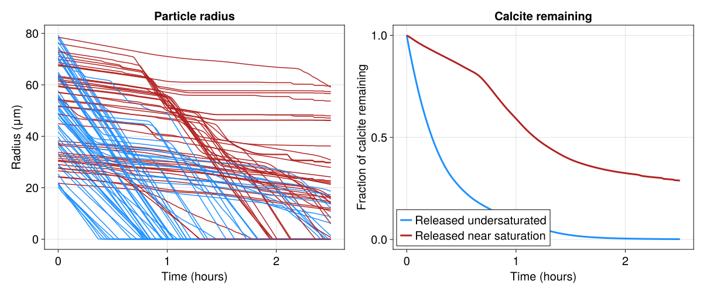

Sinking and dissolving particles in two-dimensional turbulence
In this example we release mineral particles at the surface of a two-dimensional turbulent flow, as might be done for ocean alkalinity enhancement. The particles sink and dissolve, releasing alkalinity into the water.
We first release hydrated lime (calcium hydroxide) with the default parameters, where large particles sink out of the eddies before they dissolve while small particles dissolve near the surface. We then release calcite, with a dissolution rate which depends on the calcite saturation of the water, across a front between strongly undersaturated water and water which is close to saturation.
Install dependencies
First we check we have the dependencies installed
using Pkg
pkg"add OceanBioME, Oceananigans, CairoMakie, JLD2"Model setup
using OceanBioME, Oceananigans, Oceananigans.Units
using CairoMakie, JLD2, Printf, Random
using OceanBioME.Models.CarbonChemistryModel: calcium_carbonate_saturation
Random.seed!(1234)We use a two-dimensional domain which is 64 m wide and deep, and periodic in x
grid = RectilinearGrid(size = (128, 128), x = (0, 64), z = (-64, 0),
topology = (Periodic, Flat, Bounded))128×1×128 RectilinearGrid{Float64, Periodic, Flat, Bounded} on CPU with 3×0×3 halo
├── Periodic x ∈ [0.0, 64.0) regularly spaced with Δx=0.5
├── Flat y
└── Bounded z ∈ [-64.0, 0.0] regularly spaced with Δz=0.5Hydrated lime
DissolvingParticles are spheres whose radius shrinks at a dissolution_rate, and which sink at a sinking_speed. By default the radius shrinks at a constant rate and the particles sink according to Stokes' law, so they slow down as they dissolve. Both can instead be functions of the particle properties and the model fields at the particle, see DissolvingMineral. The default mineral is calcium hydroxide, which releases two moles of alkalinity per mole dissolved.
n = 1000
particles = DissolvingParticles(n; grid)1000 BiogeochemicalParticles with DissolvingMineral{Float64} biogeochemistry:
├── fields: (:r, :sinking_speed)
└── coupled tracers: (:Alk,)
The particles start with zero radius, so they do nothing until we release them.
We couple the particles to a carbonate system without any biology, which has the alkalinity (Alk) tracer that the particles release, and dissolved inorganic carbon (DIC)
biogeochemistry = NutrientsPlanktonDetritus(grid; inorganic_carbon = CarbonateSystem(), particles)
model = NonhydrostaticModel(grid; biogeochemistry, advection = WENO(order = 5))NonhydrostaticModel{CPU, RectilinearGrid}(time = 0 seconds, iteration = 0)
├── grid: 128×1×128 RectilinearGrid{Float64, Periodic, Flat, Bounded} on CPU with 3×0×3 halo
├── timestepper: RungeKutta3TimeStepper
├── advection scheme:
│ ├── momentum: WENO{3, Float64, Oceananigans.Utils.BackendOptimizedDivision}(order=5)
│ ├── DIC: WENO{3, Float64, Oceananigans.Utils.BackendOptimizedDivision}(order=5)
│ └── Alk: WENO{3, Float64, Oceananigans.Utils.BackendOptimizedDivision}(order=5)
├── tracers: (DIC, Alk)
├── closure: Nothing
├── buoyancy: Nothing
└── coriolis: NothingSpin up
We start from random velocities and let the turbulence develop for 30 minutes
Alk₀ = 2300 # mmol/m³
uᵢ(x, z) = 0.02 * randn() # m/s
set!(model, u = uᵢ, w = uᵢ, DIC = 2000, Alk = Alk₀)
simulation = Simulation(model, Δt = 1, stop_time = 30minutes)
conjure_time_step_wizard!(simulation, cfl = 0.5, max_Δt = 10)
progress(sim) = @printf("Iteration: %04d, time: %s, Δt: %s, wall time: %s\n",
iteration(sim), prettytime(sim), prettytime(sim.Δt), prettytime(sim.run_wall_time))
add_callback!(simulation, progress, TimeInterval(30minutes))
run!(simulation)[ Info: Initializing simulation...
Iteration: 0000, time: 0 seconds, Δt: 1.100 seconds, wall time: 0 seconds
[ Info: ... simulation initialization complete (954.910 ms)
[ Info: Executing initial time step...
[ Info: ... initial time step complete (1.220 seconds).
[ Info: Simulation is stopping after running for 3.614 seconds.
[ Info: Simulation time 30 minutes equals or exceeds stop time 30 minutes.
Iteration: 0323, time: 30 minutes, Δt: 10 seconds, wall time: 3.614 seconds
Release
Now we release the particles in a 16 m wide patch at the surface, with radii between 20 and 80 μm.
Each computational particle stands for many real particles, the number of which is set by the scalefactors. Here we release 1 kg of lime per metre in the (flat) y direction.
r₀ = 20e-6 .+ 60e-6 * rand(n)
x₀ = 24 .+ 16 * rand(n)
z₀ = - rand(n)
mineral = particles.biogeochemistry
scalefactor = 1 / (mineral.density * 4π / 3 * sum(r₀.^3)) # 1 kg / total particle mass
set!(particles, r = r₀, x = x₀, z = z₀, scalefactors = scalefactor)
release_time = time(simulation)1800.0Diagnosing the pH
The pH is not a model variable, so we diagnose it from the carbonate chemistry with a KernelFunctionOperation, which is computed in every cell when it is saved. The model has no temperature or salinity, so we choose constant values of 10 °C and 35.
carbon_chemistry = CarbonChemistry()
@inline total_scale_pH(i, j, k, grid, carbon_chemistry, DIC, Alk, T, S) =
@inbounds carbon_chemistry(; DIC = DIC[i, j, k], Alk = Alk[i, j, k], T, S, output = Val(:pHᵗ))
(; DIC, Alk) = model.tracers
pH = KernelFunctionOperation{Center, Center, Center}(total_scale_pH, grid, carbon_chemistry, DIC, Alk, 10.0, 35.0)KernelFunctionOperation at (Center, Center, Center)
├── grid: 128×1×128 RectilinearGrid{Float64, Periodic, Flat, Bounded} on CPU with 3×0×3 halo
├── kernel_function: total_scale_pH (generic function with 1 method)
└── arguments: ("CarbonChemistry", "Field", "Field", "Float64", "Float64")We save the alkalinity, its horizontal average and integral, the pH, and the particle positions and radii
filename = "dissolving_particles"
outputs = (; Alk, pH, mean_Alk = Average(Alk, dims = 1), total_Alk = Integral(Alk))
simulation.output_writers[:alkalinity] = JLD2Writer(model, outputs;
filename = "$filename.jld2",
schedule = TimeInterval(1minute),
overwrite_files = true)
simulation.output_writers[:particles] = JLD2Writer(model, (; particles);
filename = "$(filename)_particles.jld2",
schedule = TimeInterval(1minute),
overwrite_files = true)JLD2Writer scheduled on TimeInterval(1 minute):
├── filepath: dissolving_particles_particles.jld2
├── 1 outputs: particles
├── array_type: Array{Float32}
├── including: [:coriolis, :buoyancy, :closure]
├── file_splitting: NoFileSplitting
└── file size: 0 bytes (file not yet created)and run for long enough that the largest particles dissolve
simulation.stop_time = 3hours
run!(simulation)[ Info: Initializing simulation...
[ Info: ... simulation initialization complete (6.785 seconds)
[ Info: Executing initial time step...
[ Info: ... initial time step complete (4.035 seconds).
Iteration: 0503, time: 1 hour, Δt: 10 seconds, wall time: 12.511 seconds
Iteration: 0683, time: 1.500 hours, Δt: 10 seconds, wall time: 14.182 seconds
Iteration: 0863, time: 2 hours, Δt: 10 seconds, wall time: 16.066 seconds
Iteration: 1043, time: 2.500 hours, Δt: 10 seconds, wall time: 18.264 seconds
[ Info: Simulation is stopping after running for 20.536 seconds.
[ Info: Simulation time 3 hours equals or exceeds stop time 3 hours.
Iteration: 1223, time: 3 hours, Δt: 10 seconds, wall time: 20.536 seconds
Results
First we load the alkalinity, pH, and particle output
Alk = FieldTimeSeries("$filename.jld2", "Alk")
pH = FieldTimeSeries("$filename.jld2", "pH")
mean_Alk = FieldTimeSeries("$filename.jld2", "mean_Alk")
total_Alk = FieldTimeSeries("$filename.jld2", "total_Alk")
times = Alk.times
function particle_output(filename)
file = jldopen(filename)
states = [file["timeseries/particles/$iteration"] for iteration in keys(file["timeseries/t"])]
close(file)
return (stack(getproperty.(states, name)) for name in (:x, :z, :r))
end
x, z, r = particle_output("$(filename)_particles.jld2")and animate the particles sinking and dissolving through the turbulence, with each particle drawn at its current size (magnified), alongside the pH
frame = Observable(1)
Alkₙ = @lift Alk[$frame] - Alk₀
pHₙ = @lift pH[$frame]
positions = @lift Point2f.(x[:, $frame], z[:, $frame])
sizes = @lift 2e5 * r[:, $frame]
title = @lift prettytime(times[$frame] - release_time) * " after release"
fig = Figure(size = (1300, 650), fontsize = 20)
Label(fig[0, 1:4], title)
ax = Axis(fig[1, 1], title = "Alkalinity increase and particles", xlabel = "x (m)", ylabel = "z (m)", aspect = DataAspect())
hm = heatmap!(ax, Alkₙ, colormap = Reverse(:deep), colorrange = (0, 80))
scatter!(ax, positions, markersize = sizes, color = :white)
Colorbar(fig[1, 2], hm, label = "mmol/m³")
ax = Axis(fig[1, 3], title = "pH and particles", xlabel = "x (m)", aspect = DataAspect())
hm = heatmap!(ax, pHₙ, colormap = :viridis, colorrange = (8.27, 8.4))
scatter!(ax, positions, markersize = sizes, color = :white)
Colorbar(fig[1, 4], hm)
record(fig, "$filename.mp4", eachindex(times), framerate = 12) do i
frame[] = i
endTo see how the turbulence changes where the particles dissolve, we compare the depth at which each particle finished dissolving with the depth it would reach in still water. A particle sinking at the Stokes' law speed, $w ∝ r²$, while its radius shrinks at a constant rate $k$, sinks $|w(r₀)| r₀ / 3k$ before it has dissolved.
dissolution_depth = [-z[p, findfirst(iszero, r[p, :])] for p in 1:n]
k = mineral.dissolution_rate
still_water_depth(r) = - mineral.sinking_speed(mineral, (; r), nothing) * r / 3kWe also check that the alkalinity lost from the particles is gained by the water
θ = mineral.released_tracers.Alk # mol Alk / mol mineral
mineral_concentration = 1000 * mineral.density / mineral.molar_mass # mmol / m³
particle_alkalinity = scalefactor * θ * mineral_concentration * 4π / 3 * vec(sum(r.^3, dims = 1))
dissolved_alkalinity = interior(total_Alk, 1, 1, 1, :) .- total_Alk[1, 1, 1, 1]and plot these along with the particle radii and the horizontally averaged alkalinity increase
hours_after_release = (times .- release_time) / hour
fig = Figure(size = (1200, 900), fontsize = 20)
ax = Axis(fig[1, 1], xlabel = "Initial radius (μm)", ylabel = "Depth (m)", title = "Depth when fully dissolved",
yreversed = true, limits = (nothing, (0, 64)))
scatter!(ax, 1e6 * r₀, dissolution_depth, color = (:black, 0.3), label = "Turbulence")
lines!(ax, 20:80, still_water_depth.(1e-6 * (20:80)), color = :red, linewidth = 3, label = "Still water")
axislegend(ax, position = :lb)
ax = Axis(fig[1, 3], xlabel = "Time (hours)", ylabel = "Radius (μm)", title = "Particle radius")
for p in 1:10:n
lines!(ax, hours_after_release, 1e6 * r[p, :], color = r₀[p], colormap = :viridis, colorrange = (20e-6, 80e-6))
end
ax = Axis(fig[2, 1], xlabel = "Time (hours)", ylabel = "z (m)", title = "Horizontally averaged alkalinity increase")
hm = heatmap!(ax, hours_after_release, znodes(mean_Alk), interior(mean_Alk, 1, 1, :, :)' .- Alk₀, colormap = Reverse(:deep))
Colorbar(fig[2, 2], hm, label = "mmol/m³")
ax = Axis(fig[2, 3], xlabel = "Time (hours)", ylabel = "Fraction of alkalinity", title = "Alkalinity budget")
lines!(ax, hours_after_release, particle_alkalinity / particle_alkalinity[1], linewidth = 3, label = "In particles")
lines!(ax, hours_after_release, dissolved_alkalinity / particle_alkalinity[1], linewidth = 3, label = "Dissolved")
lines!(ax, hours_after_release, (particle_alkalinity .+ dissolved_alkalinity) / particle_alkalinity[1],
linewidth = 3, linestyle = :dash, color = :black, label = "Total")
axislegend(ax, position = :rc)
fig
Calcite with saturation dependent dissolution
Calcite only dissolves in water which is undersaturated, and as it dissolves it raises the saturation state of the water around it. The calcite saturation state, Ω, is computed from the dissolved inorganic carbon and alkalinity by CarbonChemistry, at the same constant temperature and salinity as the pH.
@inline calcite_saturation(carbon_chemistry, DIC, Alk) =
calcium_carbonate_saturation(carbon_chemistry; DIC, Alk, T = 10.0, S = 35.0)calcite_saturation (generic function with 1 method)The dissolution_rate of a DissolvingMineral can be any function of the mineral, the particle's fields, and the required_fields of the model at the particle. Here the radius shrinks at a rate proportional to the undersaturation, 1 - Ω.
struct SaturationLimitedDissolution{C, FT}
carbon_chemistry :: C
maximum_rate :: FT # m/s
end
@inline function (dissolution::SaturationLimitedDissolution)(mineral, particle_fields, tracer_fields)
Ω = calcite_saturation(dissolution.carbon_chemistry, tracer_fields.DIC, tracer_fields.Alk)
return dissolution.maximum_rate * max(0, 1 - Ω)
end
calcite = DissolvingMineral(density = 2710,
molar_mass = 100.09e-3,
released_tracers = (; DIC = 1, Alk = 2),
dissolution_rate = SaturationLimitedDissolution(carbon_chemistry, 4e-8),
required_fields = (:DIC, :Alk))DissolvingMineral{Float64} biogeochemistry tracking particle `r`adius
├── density: 2710.0 kg/m³
├── molar mass: 0.10009 kg/mol
├── released tracers: (DIC = 1.0, Alk = 2.0) mol/mol
├── dissolution rate: Main.var"##142".SaturationLimitedDissolution{OceanBioME.Models.CarbonChemistryModel.CarbonChemistry{OceanBioME.Models.CarbonChemistryModel.K0{Float64}, @NamedTuple{K1::OceanBioME.Models.CarbonChemistryModel.K1{Float64, OceanBioME.Models.CarbonChemistryModel.PressureCorrection{Float64}}, K2::OceanBioME.Models.CarbonChemistryModel.K2{Float64, OceanBioME.Models.CarbonChemistryModel.PressureCorrection{Float64}}}, OceanBioME.Models.CarbonChemistryModel.KB{Float64, OceanBioME.Models.CarbonChemistryModel.PressureCorrection{Float64}}, OceanBioME.Models.CarbonChemistryModel.KS{OceanBioME.Models.CarbonChemistryModel.IonicStrength{Float64}, Float64, OceanBioME.Models.CarbonChemistryModel.PressureCorrection{Float64}}, OceanBioME.Models.CarbonChemistryModel.KF{OceanBioME.Models.CarbonChemistryModel.IonicStrength{Float64}, OceanBioME.Models.CarbonChemistryModel.KS{OceanBioME.Models.CarbonChemistryModel.IonicStrength{Float64}, Float64, OceanBioME.Models.CarbonChemistryModel.PressureCorrection{Float64}}, Float64, OceanBioME.Models.CarbonChemistryModel.PressureCorrection{Float64}}, @NamedTuple{KP1::OceanBioME.Models.CarbonChemistryModel.KP{Float64, OceanBioME.Models.CarbonChemistryModel.PressureCorrection{Float64}}, KP2::OceanBioME.Models.CarbonChemistryModel.KP{Float64, OceanBioME.Models.CarbonChemistryModel.PressureCorrection{Float64}}, KP3::OceanBioME.Models.CarbonChemistryModel.KP{Float64, OceanBioME.Models.CarbonChemistryModel.PressureCorrection{Float64}}}, OceanBioME.Models.CarbonChemistryModel.KSi{OceanBioME.Models.CarbonChemistryModel.IonicStrength{Float64}, Float64, OceanBioME.Models.CarbonChemistryModel.PressureCorrection{Float64}}, OceanBioME.Models.CarbonChemistryModel.KW{Float64, OceanBioME.Models.CarbonChemistryModel.PressureCorrection{Float64}}, OceanBioME.Models.CarbonChemistryModel.IonicStrength{Float64}, OceanBioME.Models.CarbonChemistryModel.KSP{Float64, OceanBioME.Models.CarbonChemistryModel.PressureCorrection{Float64}}, typeof(OceanBioME.Models.teos10_polynomial_approximation), OceanBioME.Models.CarbonChemistryModel.PolynomialVirialCoefficientForCarbonDioxide{Float64}, OceanBioME.Models.CarbonChemistryModel.CrossVirialCoefficientForCarbonDioxide{Float64}, OceanBioME.DampedNewtonRaphsonSolver{Float64, Int64, @NamedTuple{lower::Float64, upper::Nothing}}}, Float64}(`CarbonChemistry` model which solves for pCO₂ and pH, 4.0e-8) m/s
├── sinking speed: OceanBioME.Models.DissolvingParticlesModel.StokesSinking{Float64, Float64, Float64}(2710.0, 1025.0, 0.00108, 9.80665) m/s
└── required fields: (:DIC, :Alk)We put the calcite particles into a new model, which starts from the turbulence at the end of the last simulation
calcite_particles = DissolvingParticles(n; grid, biogeochemistry = calcite)
biogeochemistry = NutrientsPlanktonDetritus(grid; inorganic_carbon = CarbonateSystem(), particles = calcite_particles)
calcite_model = NonhydrostaticModel(grid; biogeochemistry, advection = WENO(order = 5))NonhydrostaticModel{CPU, RectilinearGrid}(time = 0 seconds, iteration = 0)
├── grid: 128×1×128 RectilinearGrid{Float64, Periodic, Flat, Bounded} on CPU with 3×0×3 halo
├── timestepper: RungeKutta3TimeStepper
├── advection scheme:
│ ├── momentum: WENO{3, Float64, Oceananigans.Utils.BackendOptimizedDivision}(order=5)
│ ├── DIC: WENO{3, Float64, Oceananigans.Utils.BackendOptimizedDivision}(order=5)
│ └── Alk: WENO{3, Float64, Oceananigans.Utils.BackendOptimizedDivision}(order=5)
├── tracers: (DIC, Alk)
├── closure: Nothing
├── buoyancy: Nothing
└── coriolis: Nothingand split the domain down the middle. The left half has more dissolved inorganic carbon and is strongly undersaturated, while the right half is close to saturation.
DICᵢ(x, z) = ifelse(x < 32, 2400, 2310) # mmol/m³
set!(calcite_model, u = model.velocities.u, w = model.velocities.w, DIC = DICᵢ, Alk = Alk₀)
(calcite_saturation(carbon_chemistry, 2400.0, 2300.0), calcite_saturation(carbon_chemistry, 2310.0, 2300.0))(0.5249618944181442, 0.9449810335366925)The particles are released with the same sizes and positions as the lime, which straddle the front
scalefactor = 1 / (calcite.density * 4π / 3 * sum(r₀.^3)) # 1 kg / total particle mass
set!(calcite_particles, r = r₀, x = x₀, z = z₀, scalefactors = scalefactor)This time we diagnose the saturation state with a KernelFunctionOperation
@inline calcite_saturation(i, j, k, grid, carbon_chemistry, DIC, Alk) =
@inbounds calcite_saturation(carbon_chemistry, DIC[i, j, k], Alk[i, j, k])
(; DIC, Alk) = calcite_model.tracers
Ω = KernelFunctionOperation{Center, Center, Center}(calcite_saturation, grid, carbon_chemistry, DIC, Alk)
simulation = Simulation(calcite_model, Δt = 1, stop_time = 2.5hours)
conjure_time_step_wizard!(simulation, cfl = 0.5, max_Δt = 10)
add_callback!(simulation, progress, TimeInterval(30minutes))
filename = "dissolving_calcite"
simulation.output_writers[:saturation] = JLD2Writer(calcite_model, (; Ω);
filename = "$filename.jld2",
schedule = TimeInterval(1minute),
overwrite_files = true)
simulation.output_writers[:particles] = JLD2Writer(calcite_model, (; particles = calcite_particles);
filename = "$(filename)_particles.jld2",
schedule = TimeInterval(1minute),
overwrite_files = true)
run!(simulation)[ Info: Initializing simulation...
Iteration: 0000, time: 0 seconds, Δt: 1.100 seconds, wall time: 0 seconds
[ Info: ... simulation initialization complete (776.021 ms)
[ Info: Executing initial time step...
[ Info: ... initial time step complete (559.165 ms).
Iteration: 0329, time: 30 minutes, Δt: 10 seconds, wall time: 10.410 seconds
Iteration: 0509, time: 1 hour, Δt: 10 seconds, wall time: 16.251 seconds
Iteration: 0689, time: 1.500 hours, Δt: 10 seconds, wall time: 22.365 seconds
Iteration: 0869, time: 2 hours, Δt: 10 seconds, wall time: 28.196 seconds
[ Info: Simulation is stopping after running for 34.068 seconds.
[ Info: Simulation time 2.500 hours equals or exceeds stop time 2.500 hours.
Iteration: 1049, time: 2.500 hours, Δt: 10 seconds, wall time: 34.068 seconds
We animate the particles sinking through the saturation state, where undersaturated water is blue and supersaturated water is red
Ω = FieldTimeSeries("$filename.jld2", "Ω")
times = Ω.times
x, z, r = particle_output("$(filename)_particles.jld2")
frame = Observable(1)
Ωₙ = @lift Ω[$frame]
positions = @lift Point2f.(x[:, $frame], z[:, $frame])
sizes = @lift 2e5 * r[:, $frame]
title = @lift "Calcite saturation and particles, " * prettytime(times[$frame]) * " after release"
fig = Figure(size = (700, 600), fontsize = 20)
ax = Axis(fig[1, 1]; title, xlabel = "x (m)", ylabel = "z (m)", aspect = DataAspect())
hm = heatmap!(ax, Ωₙ, colormap = :balance, colorrange = (0.5, 1.5))
scatter!(ax, positions, markersize = sizes, color = :black)
Colorbar(fig[1, 2], hm, label = "Ω")
record(fig, "$filename.mp4", eachindex(times), framerate = 12) do i
frame[] = i
endThe particles released into the undersaturated water dissolve as they sink, while those released close to saturation dissolve much more slowly, and the largest reach the bottom. We can see this in the radius of each particle, and in the fraction of the calcite released on each side of the front which is left.
undersaturated = x₀ .< 32
remaining(released) = vec(sum(r[released, :].^3, dims = 1)) / sum(r₀[released].^3)
fig = Figure(size = (1200, 500), fontsize = 20)
ax = Axis(fig[1, 1], xlabel = "Time (hours)", ylabel = "Radius (μm)", title = "Particle radius")
for p in 1:10:n
lines!(ax, times / hour, 1e6 * r[p, :], color = ifelse(undersaturated[p], :dodgerblue, :firebrick))
end
ax = Axis(fig[1, 2], xlabel = "Time (hours)", ylabel = "Fraction of calcite remaining", title = "Calcite remaining")
lines!(ax, times / hour, remaining(undersaturated), linewidth = 3, color = :dodgerblue, label = "Released undersaturated")
lines!(ax, times / hour, remaining(.!undersaturated), linewidth = 3, color = :firebrick, label = "Released near saturation")
axislegend(ax, position = :lb)
fig
This page was generated using Literate.jl.